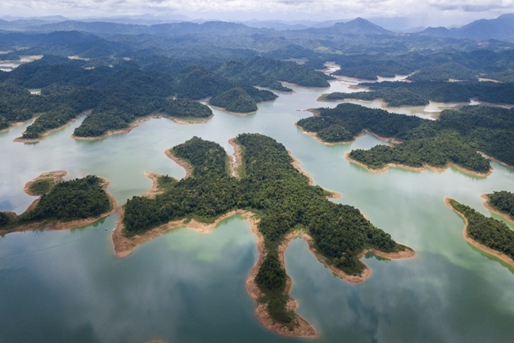

Khu du lịch Bến En Thanh Hóa nằm trải dài giữa hai huyện Như Thanh và Như Xuân, cách trung tâm thành phố Thanh Hóa khoảng 45km theo hướng Tây Nam - được mệnh danh từ lâu là “Hạ Long trên cạn của xứ Thanh”. Được thiên nhiên ưu ái ban tặng cho nét đẹp thanh tú, nguyên sơ, nơi đây thu hút hàng triệu khách du lịch mỗi năm và là niềm tự hào lớn lao của những con người xứ Thanh.
Vườn quốc gia Bến En thành lập vào năm 1992 với diện tích khoảng 15.000ha, trong đó chủ yếu là rừng nguyên sinh với hệ sinh thái động thực vật vô cùng đa dạng, phong phú. Nơi đây còn được bao quanh bởi những con sông, nổi bật là sông Mực rộng hơn 4.000ha, bốn mùa mặt hồ luôn tĩnh lặng, xanh biếc, tạo nên một khung cảnh sơn thủy hữu tình, khiến bạn có cảm giác như lạc vào chốn thần tiên.
Khu du lịch Bến En ẩn chứa nhiều điều bí ẩn thách thức khách du lịch khám phá. Một trong những nét đẹp thu hút nhiều tò mò đó là hang Ngọc. Sở dĩ hang động này có tên Ngọc bởi ở giữa hang có một khối đá lấp lánh chất liệu từ thạch nhũ từ thời xa xưa. Theo truyền thuyết dân gian, khi tắm nước suối chảy dọc hang Ngọc, bạn sẽ được gột rửa hết tội lỗi và bụi trần. Điều này chưa bao giờ được kiểm chứng nhưng những người dân địa phương vẫn luôn tôn thờ và truyền tai nhau những tín ngưỡng dân gian cao đẹp như vậy. Hầu hết du khách ghé thăm nơi đây đều muốn được một lần được trải nghiệm cảm giác thanh tịnh đó, và hòa lòng mình vào dòng suối trong vắt chảy nhẹ nhàng qua hang Ngọc.
Rừng quốc gia Bến En có rất nhiều vùng đồi bằng thích hợp cho việc cắm trại ăn trưa hoặc ngủ lại trong lều qua đêm. Hoạt động cắm trại ở đây được cho phép tự do và miễn phí. Ở bên phía ban quản lí cũng có dịch vụ cho thuê lều và bạt phù hợp nếu bạn sơ suất chưa chuẩn bị trước. Các thực phẩm phù hợp cho việc cắm trại có thể kể đến những đồ ăn nhanh, món ăn hộp vừa đảm bảo vệ sinh lại vừa ngon miệng.
Nếu bạn là một người yêu thích thiên nhiên, yêu những nét đẹp hoang sơ thì hãy đến với vươn Quốc gia Bến En để hòa mình cùng với thiên nhiên, quên đi những mệt mỏi và căng thẳng trong cuộc sống.
Nguồn: Sưu tầm